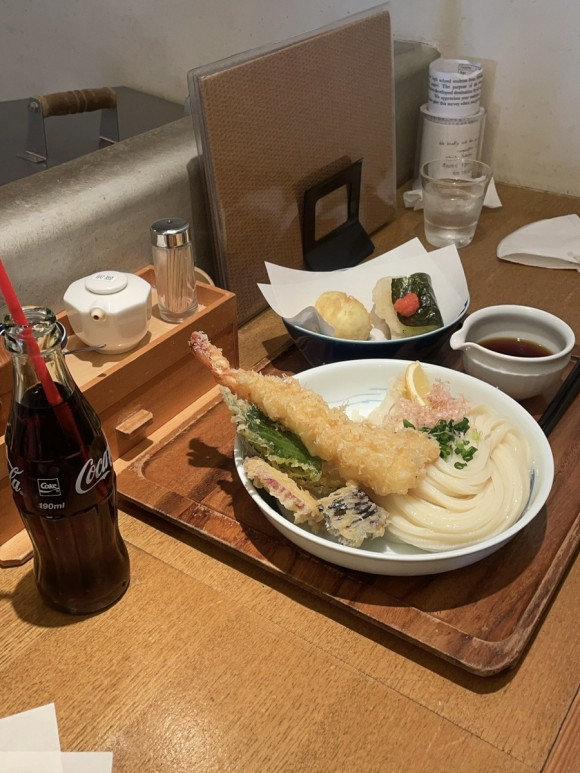
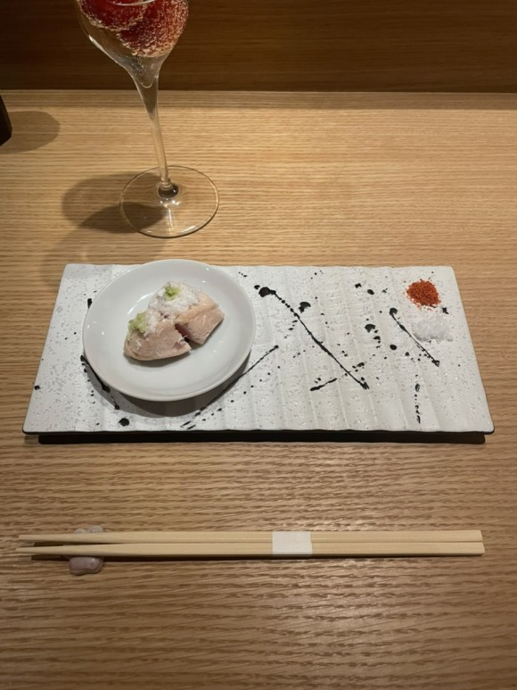
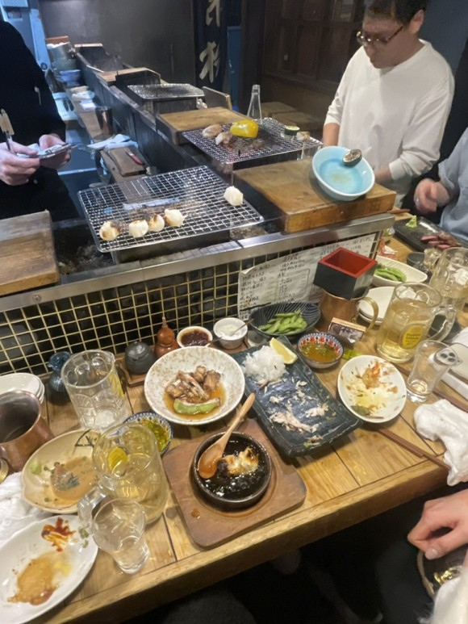
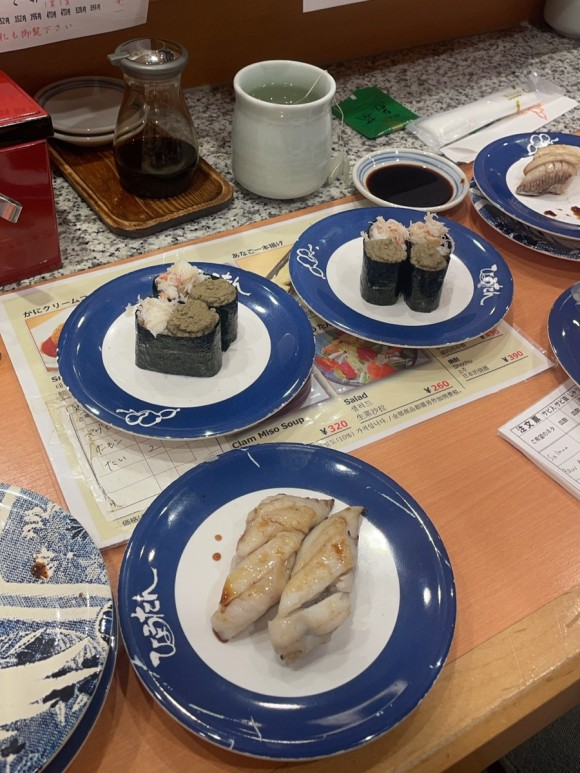
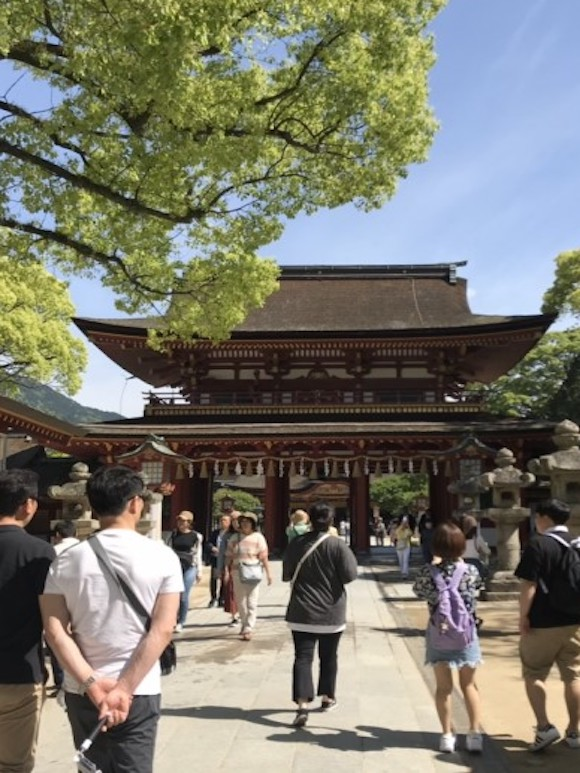
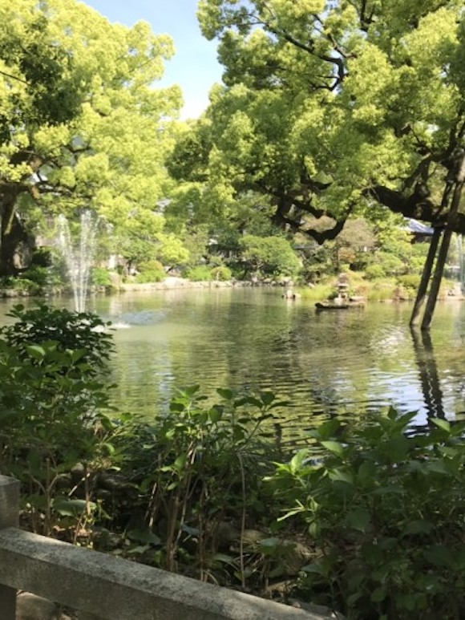
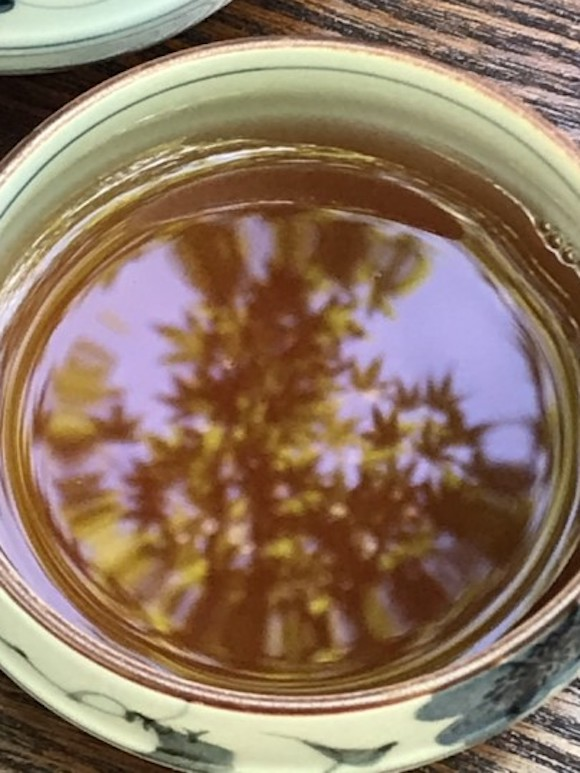
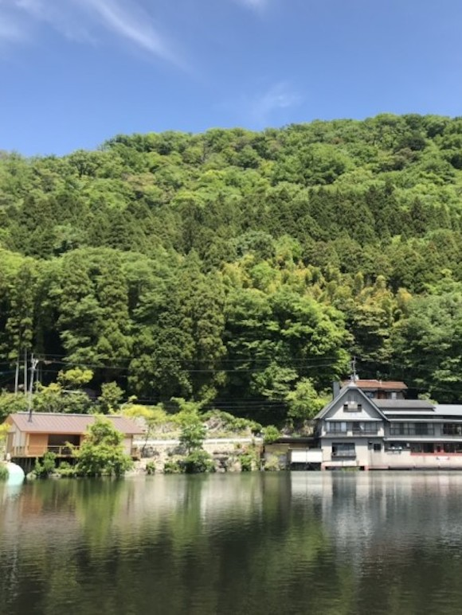

Central Asia , Fukuoka
먹으러 가는 후쿠오카
가까워서 가기 좋은 후쿠오카, 볼 건 적지만 하루종일 사육당하기 좋은 곳...이다




나열해도 끝이 없는 후쿠오카 먹부림
1) 신우동
후쿠오카를 갈 때마다 들리는 곳 냉우동의 신급이다
2) 니혼슈바
합리적인 가격으로 니혼슈와 함께 코스요리를 즐길 수 있는 곳
3) 로바타신코시
로컬 예약만 받기 때문에 예약하기 어려웠던 식당
분위기부터 맛까지, 꼭 가야 되는 곳 중 하나
4) 텐진역 스시바
웬만한 오마카세를 이기는 맛 + 저렴한 가격까지




후쿠오카 근교인 다자이후와 유후인.
고즈넉한 분위기를 즐기고 싶다면 가보는 것을 추천한다